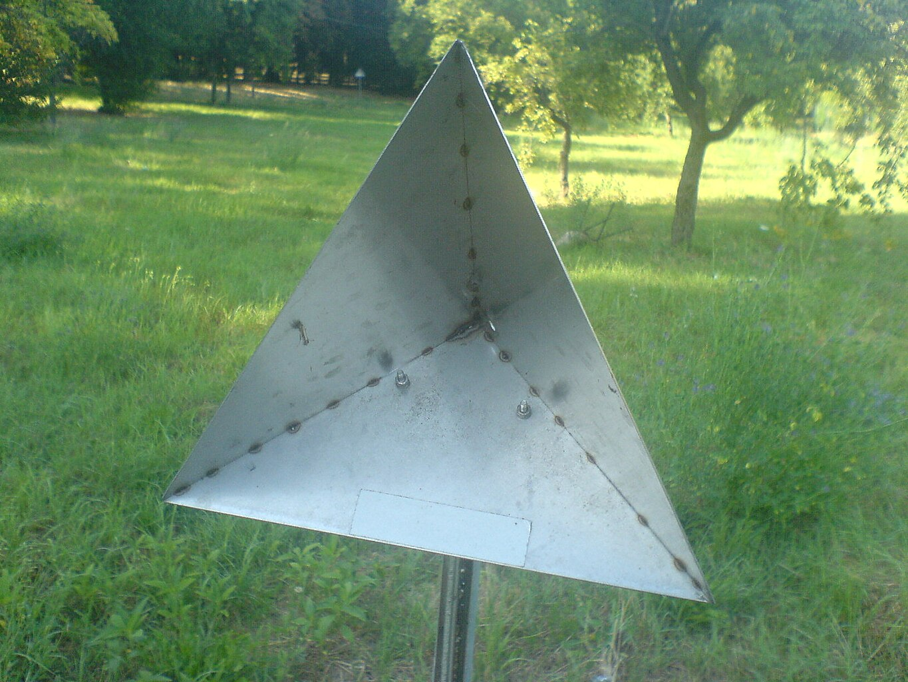
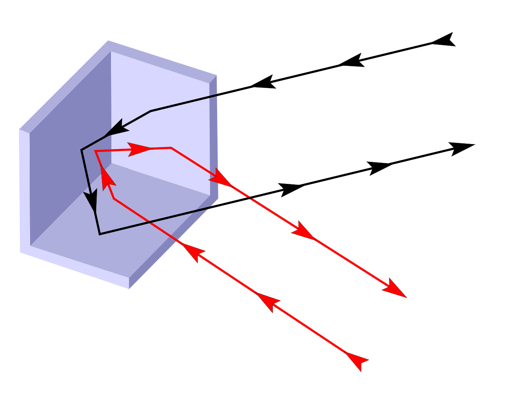
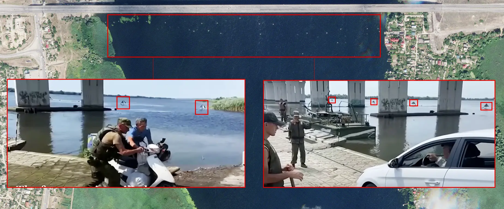
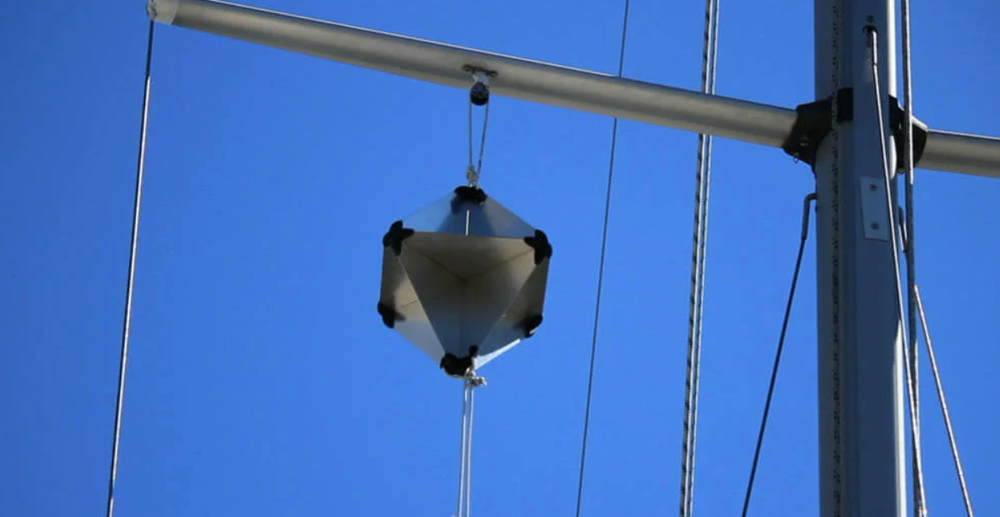
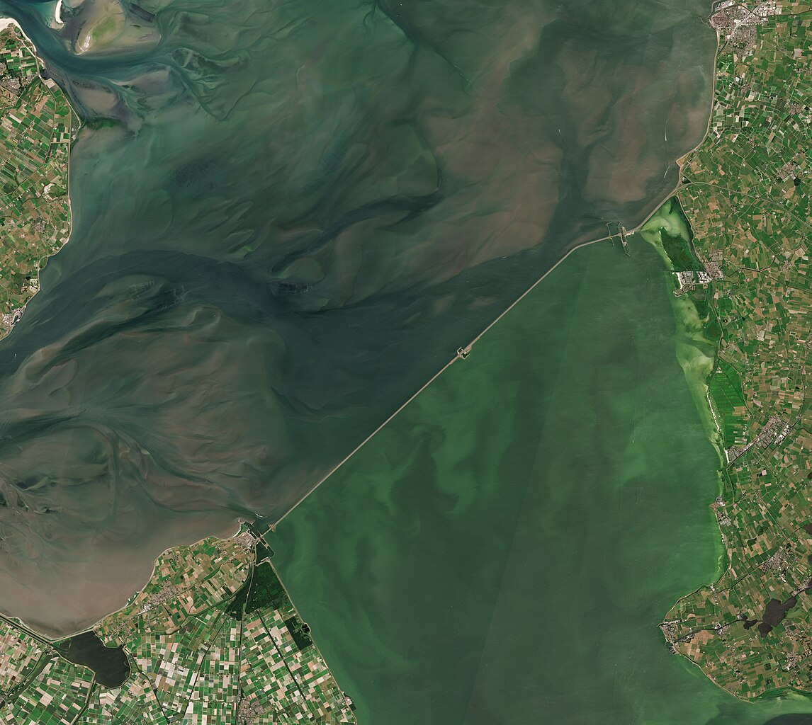
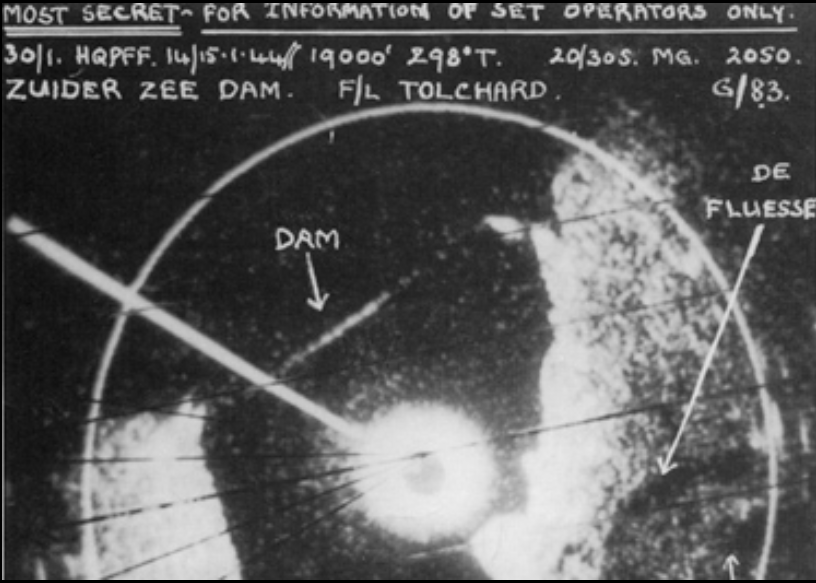
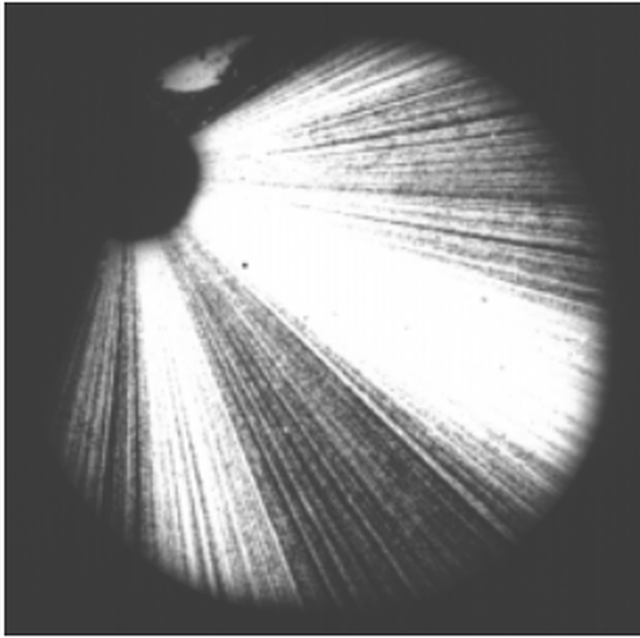

레이더 개발 이야기 (43) - 독일의 대응
게시: 2023-08-17T06:30:20+09:00
<누가 그런 거에 속나?> 괴링을 경악시킨 항법용 공대지 레이더 H2S의 실체를 알게 된 독일군은 그에 대한 대응책 마련에 절치부심. 여태껏 거의 3년 동안 영국과 독일은 서로의 전파 항법 시스템에 대해 jamming을 주거니 받거니 한 사이였으므로, 이번에도 jamming을 시도. 일단 제일 먼저 시도한 것은 decoy. 얇은 금속판을 접합하여 삼각뿔 등의 다면체를 만들고 이를 교외의 공터나 상대적으로 덜 중요한 건물 등 폭탄이 떨어져도 괜찮은 곳에 잔뜩 배치. 이는 직각으로 맞닿은 금속판이 레이더 신호를 가장 강력하고 선명하게 반사하기 때문임. 그런 금속판으로 만든 다면체를 보통 radar reflector라고 하는데, 이런 것을 그럴싸하게 설치해놓으면 영국 폭격기는 엉뚱한 곳에서 엉뚱하게 큰 물체를 보게 되므로 '여기는 어디인가 나는 또 누구인가'하며 헷갈릴 수가 있었음.

(대표적인 radar reflector는 이렇게 삼각뿔 모양으로 이어 붙인 금속판인데, 이를 corner reflector라고 부름.)

(Corner reflector의 원리를 간단히 보여주는 그림. 그냥 전파 거울 같은 거라고 생각하면 됨.)

(최근 우크라이나 전쟁에서 러시아가 우크라이나의 HIMARS 등을 이용한 장거리 공격으로부터 후방의 보급로 교량을 보호하기 위해 재미있는 일을 벌인 적이 있었음. 바로 강물 위에 말뚝을 박고 일렬로 삼각뿔 모양의 물체를 즐비하게 꽂아 놓았음. 이는 우크라이나에게 정보를 주고 있는 것으로 짐작되는 미국의 SAR (영상 레이더) 위성을 속여 그 자리에 마치 교량이 있는 것처럼 꾸며 놓은 것. 그러나 그 설치 방법이 미숙하고 너무 대충이라서 아무도 속이지 못했다고.) 그러나 이 방법은 한계가 뚜렷. 레이더 리플렉터는 군사용으로도 최근 러시아가 실전에서 사용한 적이 있지만, 그 효과는 매우 미미. 레이더 리플렉터는 마치 건물 그림을 그려놓고 상대가 진짜 건물이라고 속기를 바라는 것과 마찬가지인데, 당연히 위장 그림을 아주 잘 그리지 않으면 상대가 속지 않으며, 그렇게 그림을 잘 그리는 것이 절대 쉽지가 않기 떄문. 독일이 여기저기 설치한 레이더 리플렉터로 인해 영국 폭격기들은 '저게 뭐지'하고 잠깐 헷갈리기는 했으나, 당연히 독일 애들이 기를 쓰고 기만책을 쓰고 있다는 것을 금방 파악하고 속지 않았음. 막말로, 아무리 리플렉터를 많이 설치한다고 해도 커다란 건물이나 강을 가릴 수는 없기 때문.

(레이더 리플렉터는 오히려 민간 선박에서 흔하게 사용되는데, 안개 상황이나 야간에 다른 선박과의 충돌을 걱정하는 작은 선박에서 마스트에 매달아서 자신의 배가 상대방의 레이더에 잘 보이도록 하는 역할로 사용됨.) <짝퉁 만드는 것도 쉽지 않네> 별 효과도 없던 radar reflector에 이어 독일군이 시도한 것은 본격적인 전파 jamming. 추락한 영국 폭격기 잔해로부터 수거된 H2S의 분석을 통해 그 scanning 주기 등을 파악한 독일 기술자들은 H2S에서 쏘는 것과 같은 고주파수의 전자파를 동일한 스캐닝 주기로 광범위하게 강력히 쏘아대면 H2S의 스코프 화면을 그냥 온통 하얗게 만들어 버릴 수 있다고 확신. 문제는 그 강력한 고주파수 전자파를 어떻게 만드느냐 하는 것. 로열 에어포스가 이제서야 H2S를 달고 밤길을 찾기 시작한 것도 그것을 만드는 것이 어려웠기 때문. 근데 독일군에는 이제 뭐가 있다? 영국 폭격기 잔해로부터 거진 H2S에 달린 cavity magnetron이 있었음. 독일 애들도 바보가 아니었음. 처칠 수상의 수석 과학 고문관 처웰(Cherwell) 경이 우려했던 대로, 독일 과학자들은 cavity magnetron을 보는 순간 즉각 그것이 어떤 원리로 뭘 만들어내는 물건인지 대번에 파악. 그러나 처웰 경 못지 않게 H2S를 탑재한 폭격기들을 독일 폭격 임무에 보내는 것에 찬성했던 영국 레이더 기술자들의 예상도 옳았음. 영국 기술진들이 캐버티 마그네트론을 발명해놓고도 H2S를 만드는데 2년 정도가 걸렸던 것처럼, 독일 기술진들도 이걸 이용해서 실제 레이더에 쓸 강력한 고주파를 만드는 데는 자잘한 기술적 문제 때문에 애를 먹었음. 결국 독일은 H2S처럼 실용화된 캐버티 마그네트론 기반의 레이더는 전쟁이 거의 끝날 때에나 만들어졌고, 결국 실전 투입 되기에는 너무 늦었음.
 
(영국 공군의 H2S가 연안 등에서의 항법용으로 충분하다는 것을 보여주는 사진. 네덜란드의 Afsluitdijk 댐 사진과 그걸 H2S로 스캐닝하여 얻은 영상) 일단 전기 장치의 명가 Siemens가 독일제 마그네트론으로 고주파수의 파장을 가진 jamming용 장비인 Roderich를 만들기는 했음. 독일군은 최대한 H2S의 레이더 반사파를 흉내 내기 위해, 시외 적당한 공터에 높은 탑을 설치하고 그 꼭대기에 로더리히를 설치한 뒤 대지를 향해 전자파를 쏘아댔음. 그러면 대지가 그 전파를 튕겨내어 사방으로 흩어질 것이고, 그것이 하늘을 나는 영국 폭격기들의 H2S 레이더 수신기에 당도할 것인데, 그러면 H2S 화면에는 엉터리 신호들이 잔뜩 잡혀 엉망이 될 것이라는 계산.

(1950년대에 테스트된 '탄막'(barrage) jamming. 레이더의 반사파와 비슷한 성질의 방해 전파를 잔뜩 쏘아대어 화면을 가득 채워버리는 저 jamming 장치를 갖춘 항공기는 5시 방향에 존재.) 하지만... 문제는 출력. 독일제 마그네트론은 역시나 2년이나 갈고 깎은 영국제 캐버티 마그네트론의 성능에 크게 미치지 못하여 고주파수의 출력이 고작 5W에 불과했음. 당연히 전파 방해의 유효 거리가 매우 짧았고, 결과적으로 무쓸모. 결국 1944년 경에는 아무짝에도 쓸모 없다는 것을 인정하고 폐기. 대신 독일이 여태까지 나름 잘 쓰던 전파 공명장치인 클리이스트론(klystron)을 이용하여 50W 출력을 내는 레이더 jamming 장치를 개발하고 이를 Roland라고 이름 붙인 뒤 실전 투입. 그러나 이 역시 충분한 출력을 내지 못해 전파 방해 유효 거리가 짧았고, 역시 1945년 3월 경에는 폐기. 이렇게 독일이 영국제 cavity magnetron을 손에 넣고 벌어진 일은 영국 공군에게는 다 별로 문제가 되지 않는 것처럼 보였음. 그러나 처웰 경이 가장 걱정하던 것은 jamming이나 radar reflector가 아니었음. 바로 독일 야간 전투기가 H2S의 전파를 역추적하는 일이 벌어지면 어떻게 하느냐 하는 것. 실제로 루프트바페는 그걸 준비하고 있었음.